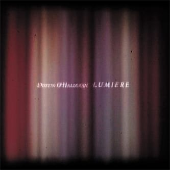

Max Richter - Infra (2010)

Лично по мне, так очень хорошо! :)
Лично по мне, так очень хорошо! :)

Еще приятной фоновой музыки.
Улыбаюсь)
Завораживающе.
We are what we repeatedly do. Excellence, then, is not an act, but a habit. — Aristotle
Очень приятная EP'шка.
Интересно наблюдать за оркестром, да и вообще интересно.
Энергично!

Приятный альбом)